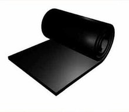
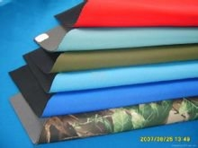
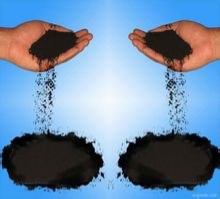

橡胶
早期的橡胶是取自橡胶树、橡胶草等植物的胶乳，加工后制成的具有弹性、绝缘性、不透水和空气的材料。高弹性的高分子化合物。分为天然橡胶与合成橡胶二种。天然橡胶是从橡胶树、橡胶草等植物中提取胶质后加工制成;合成橡胶则由各种单体经聚合反应而得。橡胶制品广泛应用于工业或生活各方面。
橡胶是一种有弹性的聚合物。橡胶可以从一些植物的树汁中取得，也可以是人造的，两者皆有相当多的应用及产品，例如轮胎、垫圈等，遂成为重要经济作物。橡胶的种植主要集中在东南亚地区，如泰国、马来西亚、印度尼西亚。化学成分
线型聚合物链中的骨架上有一个未饱和的双键，这个双键通常存在氧硫时候可以打开，在相邻键之间形成交联。就会固化成热固性聚合物TS。顺势聚丁二烯的单体就可以打开。种类介绍
橡胶皮橡胶按原料分为天然橡胶和合成橡胶。按形态分为块状生胶、乳胶、液体橡胶和粉末橡胶。乳胶为橡胶的胶体状水分散体；液体橡胶为橡胶的低聚物，未硫化前一般为粘稠的液体；粉末橡胶是将乳胶加工成粉末状，以利配料和加工制作。20世纪60年代开发的热塑性橡胶，无需化学硫化，而采用热塑性塑料的加工方法成形。橡胶按使用又分为通用型和特种型两类。是绝缘体，不容易导电，但如果沾水或不同的温度的话，有可能变成导体。导电是关于物质内部分子或离子的电子的传导容易情况。分类
按照来源和用途分类：天然橡胶、合成橡胶；合成橡胶又分为通用合成橡胶和特种合成橡胶。
天然橡胶
天然橡胶主要来源于三叶橡胶树，当这种橡胶树的表皮被割开时，就会流出乳白色的汁液，称为胶乳，胶乳经凝聚、洗涤、成型、干燥即得天然橡胶。橡胶制品合成橡胶是由人工合成方法而制得的，采用不同的原料（单体）可以合成出不同种类的橡胶。1900年～1910年化学家C.D.哈里斯(Harris)测定了天然橡胶的结构是异戊二烯的高聚物，这就为人工合成橡胶开辟了途径。1910年俄国化学家SV列别捷夫(Lebedev，1874－1934)以金属钠为引发剂使1，3－丁二烯聚合成丁钠橡胶，以后又陆续出现了许多新的合成橡胶品种，如顺丁橡胶、氯丁橡胶、丁苯橡胶等等。合成橡胶的产量已大大超过天然橡胶，其中产量最大的是丁苯橡胶。
通用合成橡胶
是指部分或全部代替天然橡胶使用的胶种，如丁苯橡胶、顺丁橡胶、异戊橡胶等，主要用于制造轮胎和一般工业橡胶制品。通用橡胶的需求量大，是合成橡胶的主要品种。
丁苯橡胶
丁苯橡胶是由丁二烯和苯乙烯共聚制得的，是产量最大的通用合成橡胶，有乳聚丁苯橡胶、溶聚丁苯橡胶 和热塑性橡胶（SBR）。
顺丁橡胶
是丁二烯经溶液聚合制得的，顺丁橡胶具有特别优异的耐寒性、耐磨性和弹橡胶轮胎性，还具有较好的耐老化性能。顺丁橡胶绝大部分用于生产轮胎，少部分用于制造耐寒制品、缓冲材料以及胶带、胶鞋等。顺丁橡胶的缺点是抗撕裂性能较差，抗湿滑性能不好。折叠
异戊橡胶
异戊橡胶是聚异戊二烯橡胶的简称，采用溶液聚合法生产。异戊橡胶与天然橡胶一样，具有良好的弹性和耐磨性，优良的耐热性和较好的化学稳定性。异戊橡胶生胶（未加工前）强度显著低于天然橡胶，但质量均一性、加工性能等优于天然橡胶。异戊橡胶可以代替天然橡胶制造载重轮胎和越野轮胎还可以用于生产各种橡胶制品。
乙丙橡胶以乙烯和丙烯为主要原料合成，耐老化、电绝缘性能和耐臭氧性能突出。乙丙橡胶可大量充油和填充碳黑，制品价格较低，乙丙橡胶化学稳定性好，耐磨性、弹性、耐油性和丁苯橡胶接近。乙丙橡胶的用途十分广泛，可以作为轮胎胎侧、胶条和内胎以及汽车的零部件，还可以作电线、电缆包皮及高压、超高压绝缘材料。还可制造胶鞋、卫生用品等浅色制品。
它是以氯丁二烯为主要原料，通过均聚或少量其它单体共聚而成的。如抗张强度高橡胶制品，耐热、耐光、耐老化性能优良，耐油性能均优于天然橡胶、丁苯橡胶、顺丁橡胶。具有较强的耐燃性和优异的抗延燃性，其化学稳定性较高，耐水性良好。氯丁橡胶的缺点是电绝缘性能，耐寒性能较差，生胶在贮存时不稳定。氯丁橡胶用途广泛，如用来制作运输皮带和传动带，电线、电缆的包皮材料，制造耐油胶管、垫圈以及耐化学腐蚀的设备衬里。结构介绍
线型结构：未硫化橡胶的普遍结构。由于分子量很大，无外力作用下，呈细团状。当外力作用，撤除外橡胶力，细团的纠缠度发生变化，分子链发生反弹，产生强烈的复原倾向，这便是橡胶高弹性的由来。
支链结构：橡胶大分子链的支链的聚集，形成凝胶。凝胶对橡胶的性能和加工都不利。在炼胶时，各种配合剂往往进不了凝胶区，形成局部空白，形成不了补强和交联，成为产品的薄弱部位。
交联结构：线型分子通过一些原子或原子团的架桥而彼此连接起来，形成三维网状结构。随着硫化历程的进行，这种结构不断加强。这样，链段的自由活动能力下降，可塑性和伸长率下降，强度，弹性和硬度上升，压缩永久变形和溶胀度下降。
基本用途
不同用型橡胶的来源及应用特点
用型橡胶的综合性能较好，应用广泛。主要有：①天然橡胶。从三叶橡胶树的乳胶制得，基本化学成分为顺- 聚异戊二烯。弹性好，强度高，综合性能好。②异戊橡胶。全名为顺-1，4-聚异戊二烯橡胶，由异戊二烯制得的高顺式合成橡胶，因其结构和性能与天然橡胶近似，故又称合成天然橡胶。③丁苯橡胶。简称SBR，由丁二烯和苯乙烯共聚制得。按生产方法分为乳液聚合丁苯橡胶和溶液聚合丁苯橡胶。其综合性能和化学稳定性好。④顺丁橡胶。全名为顺式-1，4-聚丁二烯橡胶，简称BR，由丁二烯聚合制得。与其他通用型橡胶比，硫化后的顺丁橡胶的耐寒性、耐磨性和弹性特别优异，动负荷下发热少，耐老化性能好，易与天然橡胶、氯丁橡胶、丁腈橡胶等并用。
不同特种型橡胶的来源及应用特点
特种型橡胶指具有某些特殊性能的橡胶。主要有：①氯丁橡胶。简称CR，由氯丁二烯聚合制得。具有良橡胶好的综合性能，耐油、耐燃、耐氧化和耐臭氧。但其密度较大，常温下易结晶变硬，贮存性不好，耐寒性差。②丁腈橡胶。简称NBR，由丁二烯和丙烯腈共聚制得。耐油、耐老化性能好，可在120℃的空气中或在150℃的油中长期使用。此外，还具有耐水性、气密性及优良的粘结性能。③硅橡胶。主链由硅氧原子交替组成，在硅原子上带有有机基团。耐高低温 ，耐臭氧，电绝缘性好。④氟橡胶。分子结构中含有氟原子的合成橡胶。通常以共聚物中含氟单元的氟原子数目来表示，如氟橡胶23，是偏二氟乙烯同三氟氯乙烯的共聚物。氟橡胶耐高温、耐油、耐化学腐蚀。⑤聚硫橡胶。由二卤代烷与碱金属或碱土金属的多硫化物缩聚而成。有优异的耐油和耐溶剂性，但强度不高，耐老化性、加工性不好，有臭味，多与丁腈橡胶并用。此外，还有聚氨酯橡胶、氯醇橡胶、丙烯酸酯橡胶等。
橡胶老化
(1)橡胶老化的现象：生胶或橡胶制品在加工、贮存或使用过程中，会受到热、氧、光等一干二净因素的影响而逐渐发生物理及化学变化，使其性能下降，并丧失用途，这种现象称为橡胶的老化。橡胶老化过程中常常会伴随一些显著的现象，如在外观上可以发现长期贮存的天然橡胶变软、发黏、出现斑点；橡胶制品有变形、变脆、变硬、龟裂、发霉、失光及颜色改变等。在物理性能上橡胶有溶胀、流变性能等的改变。在力学性能上会发生拉伸强度、断裂伸长率、冲击强度、弯曲强度、压缩率、弹性等指标下降。
(2)橡胶老化的原因：橡胶发生老化现象源于其长期受热、氧、光、机械力、辐射、化学介质、空气中的臭氧等外部因素的作用，使其大分子链发生化学变化，破坏了橡胶原有化学结构，从而导致橡胶性能变坏。导致橡胶发生老化现象的外部因素主要有物理因素、化学因素及生物因素。物理因素包括热、光、电、应力等；化学因素包括氧、臭氧、酸、碱、盐及金属离子等；生物因素包括微生物(霉菌、细菌)、昆虫(白蚁等)。这些外界因素在橡胶老化过程中，往往不是单独起作用，而是相互影响，加速橡胶老化进程。如轮胎胎侧在使用过程中就会受到热、光、交变应力和应变、氧、臭氧等多种形式因素的影响。
不同的制品在不同的使用条件下，各种因素的作用程度不同，其老化情况也不一样。即使同一制品，因使用的季节和地区不同，老化情况也有区别。因此，橡胶的老化是由多种因素引起的综合的化学反应。在这些因素中，最常见且最重要的化学因素是氧和臭氧；物理因素是热、光和机械应力。一般橡胶制品的老化均是由它们中的一种或几种因素共同作用的结果，最常见的热氧老化，其次有臭氧老化、疲劳老化和光氧老化。[2]
{kind=link}
{kind=link}
{kind=link}